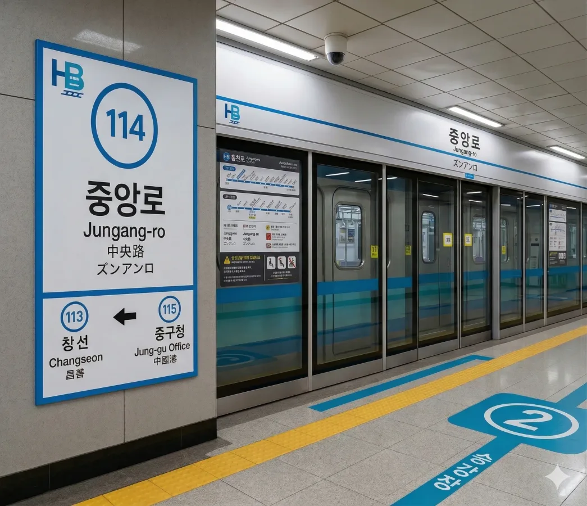
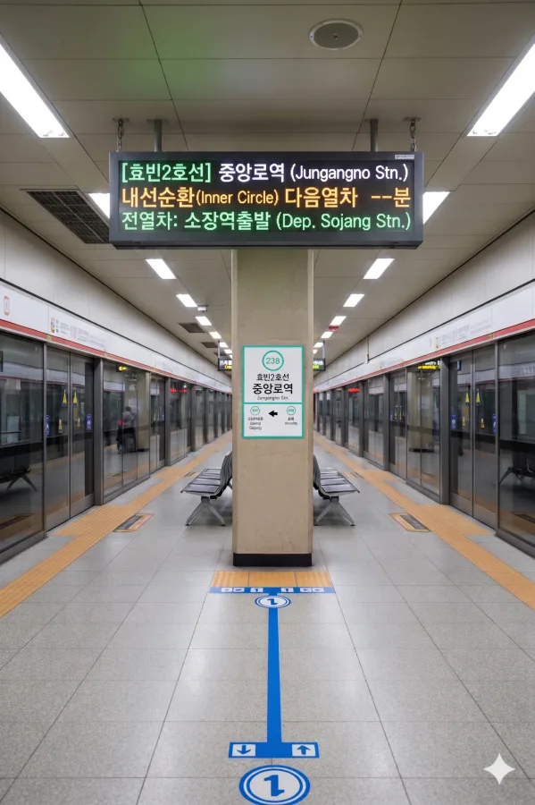
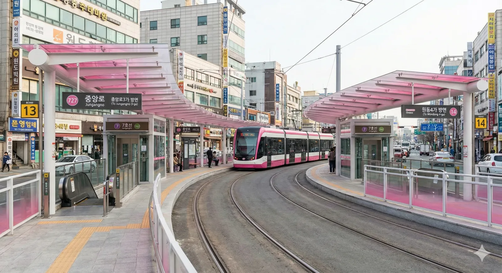

효빈 도시철도 1호선 114번, 2호선 238번, 7호선 727번. 효빈광역시 중구 중앙로5가 7-9에 위치해 있다.
효빈광역시 원도심의 중심이자 교통의 요충지이다. 인근에 효빈은행 본점, 중구청, 중앙시장 등 주요 시설이 밀집해 있어 유동인구가 매우 많다.
오랜 역사를 가진 7호선 노면전차와 도시철도 1, 2호선이 교차하는 트리플 환승역이며, 1호선과 2호선 급행열차가 모두 정차하는 핵심 정차역으로 효빈시 대중교통망의 중추 역할을 수행한다.
|
1
2
7
|
||
|---|---|---|
| 번호 | 주요 시설 및 방향 | 비고 |
| 1 | 효빈초 | |
| 2 | 석양식당 | |
| 3 | 우리은행 | |
| 4 | 신협중앙회 효빈덕북지역본부 | |
| 5 | 중앙삼거리 | |
| 6 | 중앙삼거리 | |
| 7 | 새마을금고 | |
| 8 | 효빈노인복지관 | |
| 9 | 새마을금고 | |
| 10 | 효빈중동초 | |
| 11 | 효빈중동푸르지오 | |
| 12 | 중앙아파트 | |
| 13 | 효빈은행중앙로지점 | |
| 14 | 7호선 중앙로역 | |
| 15 | 교보문고 효빈점 | |
※ 상대식 승강장 (중선 포함)

| 창선 ↑ | ||||
| 하 | ㅣ | ㅣ | ㅣ | 상 |
| ↓ 중구청 | ||||
| 상 | 1 효빈 도시철도 1호선 (완행/급행 공용) | 창선 · 곽산 · 곽암해수욕장 방면 (급행 정차) |
| 하 | 1 효빈 도시철도 1호선 (완행/급행 공용) | 효빈역 · 전천 · 입희 · 장선 방면 (급행 정차) |
※ 1면 2선 섬식 승강장

| 소장 ↑ | |||
| ㅣ | 하 | 상 | ㅣ |
| ↓ 심동 | |||
| 상 | 2 효빈 도시철도 2호선 (완행/급행 공용) | 외선순환 (효빈대학교 · 북효빈역 · 월천 방면) (급행 정차) |
| 하 | 2 효빈 도시철도 2호선 (완행/급행 공용) | 내선순환 (내항 · 월천 방면) (급행 정차) |
※ 지상 1층 노면 전차 상대식 승강장

| 중앙로3가 ↑ | |||
| 하 | ㅣ | ㅣ | 상 |
| ↓ 원동4가 | |||
| 상 | 7 효빈 도시철도 7호선 | 중보로·어간중앙 방면 |
| 하 | 7 효빈 도시철도 7호선 | 효빈대입구 방면 |
| 중앙로역 이용객 통계 | |||||
|---|---|---|---|---|---|
| 연도 | 1 | 2 | 7 | 합계 | 비고 |
| 2020년 | 38,616명 | 18,272명 | 6,612명 | 63,500명 | |
| 2021년 | 38,826명 | 18,838명 | 7,513명 | 65,177명 | |
| 2022년 | 50,178명 | 21,003명 | 8,538명 | 79,719명 | |
| 2023년 | 52,020명 | 21,652명 | 8,624명 | 82,296명 | |
| 2024년 | 52,032명 | 22,322명 | 9,374명 | 83,728명 | |
| 버스 종류 | 노선 번호 |
|---|---|
| 급행 | 급행버스 01 |
| 순환 | 순환버스 10 |
| 좌석 | 좌석버스 2222 |
| 공항 | 공항버스 A02 |
| 간선 | 간선버스 14 |
| 지선 | 지선버스 112, 지선버스 161, 지선버스 291, 지선버스 292 |